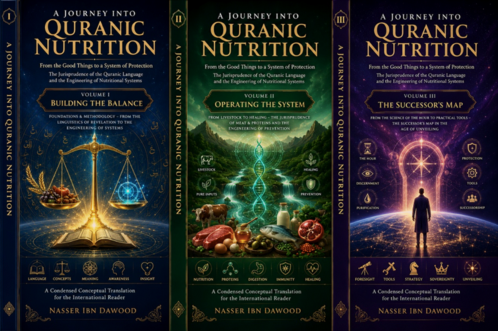

**A Condensed Conceptual Translation for the International Reader**
---
Knowledge is a universal right. The author firmly believes that wisdom should not be locked behind paywalls or language barriers.
- **Global Access Policy:** All books in this library are available for free in multiple digital formats (PDF, HTML, DOCX, TXT).
- **The Digital Library:** As of early 2026, the collection hosts 68 volumes (34 in Arabic and 34 in English), fully optimized for AI-assisted research and digital archiving.
- **Official Platforms:**
- Main Website: nasserhabitat.github.io/nasser-books/
- GitHub: nasserhabitat/nasser-books
---
This English edition is a **condensed conceptual adaptation**. It is not a word-for-word translation, but rather an "extraction of essence." It presents the core philosophical framework in accessible English, omitting the exhaustive linguistic debates and classical references found in the original Arabic text.
**For the academic researcher:** The original Arabic version remains the primary source for comprehensive linguistic analysis, detailed exegesis (Tafsir), and the complete bibliography.
---
Modern humans do not simply "eat." They are **consumed** by a global system designed to extract their will, reprogram their preferences, and manufacture addiction.
We live in an age of unprecedented abundance—yet also unprecedented confusion. Supermarkets are filled with thousands of products, but most of them are not food in the traditional sense. They are **industrial constructs**: chemicals assembled to mimic taste, engineered to trigger pleasure centers, and designed to keep you coming back for more.
This is not merely a health crisis. It is a **crisis of perception**.
The average person today does not choose what to eat based on genuine hunger or biological wisdom. Instead, they respond to:
- Algorithms that know their psychological weaknesses
- Advertising campaigns funded by billion-dollar corporations
- Pseudo-scientific studies financed by the food industry
- Social media trends that change faster than real science can validate
The result? A human being who has lost the ability to distinguish between what builds and what destroys, between what nourishes and what poisons, between what aligns with innate human nature (*Fitrah*) and what distorts it.
---
This book begins from a simple but radical premise:
> **The Quran does not speak of food as mere biological material. It speaks of food as an "operating system" that affects insight, behavior, immunity, and the very capacity for moral distinction.**
In the conventional view, nutrition is about calories, proteins, fats, and vitamins. The body is a machine; food is fuel.
In the Quranic view, the human being is not a machine. The human being is a **multi-layered existence**:
- A body (physical matter)
- A psyche (emotional and psychological center)
- A mind (cognitive processor)
- A spirit (transcendent core)
- A network of relationships (social and cosmic)
Food, therefore, is not merely fuel. It is **existential input**—data that shapes how we see, decide, feel, and act.
This is why the Quran does not give us a simple "healthy eating guide." It gives us a **system of governance** over what enters us, whether through the mouth, the ear, or the eye.
---
If we approach the Quran as a traditional religious text, we ask: *What does God command?*
But if we approach it as an **operating system**, we ask: *How does what God says function within my existence?*
This shift—from theology to engineering, from obedience to understanding—is the heart of this book.
An operating system (OS) is the foundational software that manages hardware and software resources. It determines:
- What inputs are accepted
- How those inputs are processed
- What outputs are generated
- How the system protects itself from corruption
The Quran, in this view, is the **divine OS** for the human being. And food, drink, thoughts, and news are all **inputs** that must be compatible with this OS.
---
To understand the Quranic OS, we must distinguish between four levels of meaning:
| Level | Description | Example (Water) |
|-------|-------------|------------------|
| **Sensory Meaning** | Direct, literal meaning related to physical reality | Water is a liquid that quenches thirst |
| **Functional Meaning** | The role the concept plays within the Quranic system | Water gives life; it enables growth and purification |
| **Structural Reading** | Analyzing relationships between concepts in the semantic network | Water connects to rivers, rain, paradise, and ritual purity |
| **Hermeneutic Interpretation** | Human effort to integrate these levels into a coherent vision | Water as "the carrier of divine information" within the human body |
These levels do not cancel each other. They **coexist**. The sensory meaning is the carrier, not the destination. The Quran does not deny the physical—it uses the physical as a doorway to the deeper.
---
Traditional Islamic scholarship developed a rich tradition of jurisprudence (*fiqh*) for actions: prayer, fasting, charity, pilgrimage.
But what about **language**? What about the words themselves?
*Fiqh al-Lisan* (The Jurisprudence of the Quranic Tongue) is a methodology that treats the Quran as a **coherent semantic system**, not a dictionary of isolated terms.
> **A concept in the Quran does not function as an independent lexical unit. It functions as an element within a network, deriving its meaning from its position and role within that network.**
In practice, this means:
1. **We do not define a word by collecting its dictionary meanings.**
2. **We analyze how the word relates to other words in the Quranic corpus.**
3. **We trace its appearances across different contexts.**
4. **We extract its "systemic function" rather than its "static definition."**
In conventional usage, *tayyib* means "pleasant" or "lawful."
In the Quranic network, *tayyib* appears as:
- *Tayyib speech* (good words)
- *Tayyib land* (fertile, pure land that produces good plants)
- *Tayyib life* (the good life promised to believers)
- *Tayyib provisions* (pure, wholesome food)
The common thread is not "taste" or "lawfulness." It is **functional harmony**—something that aligns with human nature (*Fitrah*), produces growth, and leaves no toxic residue in body or consciousness.
Thus, *tayyib* is not a label we stick on certain foods. It is a **state of being**—a measure of compatibility between input and system.
---
Every concept analyzed in this book follows a fixed protocol:
| Step | Action |
|------|--------|
| **1** | Present the common definition in religious or cultural discourse |
| **2** | Identify areas of reduction or confusion in that definition |
| **3** | Analyze the concept's usage within the Quranic context (network analysis) |
| **4** | Reconstruct a precise, foundational definition |
| **5** | Explain the methodological impact of this definition on understanding and behavior |
This is not an attempt to produce "new interpretations" for their own sake. It is an attempt to **reactivate** Quranic concepts as tools for building consciousness, not merely subjects for theoretical understanding.
---
A common approach in modern Islamic discourse is to "prove" that the Quran anticipated modern scientific discoveries. This book rejects that approach.
1. **The science of today may be obsolete tomorrow.** If we tie the meaning of a verse to a specific scientific theory, what happens when that theory is disproven? Faith becomes vulnerable.
2. **It makes science the judge of revelation.** The laboratory becomes the authority that decides whether the Quran is "miraculous." This is a reversal of proper hierarchy.
3. **It reduces the Quran to a justification manual.** The Quran becomes a tool for proving that "Islam knew it first," losing its primary function as guidance for living.
Instead of projecting modern science onto the Quran, this book proposes:
| Step | Action |
|------|--------|
| **1** | Linguistic-structural analysis of the concept within its original context |
| **2** | Extraction of the semantic network (how the word connects to others) |
| **3** | Identification of the *Sunna* (the universal law governing the phenomenon) |
| **4** | Testing human knowledge against these laws—not the reverse |
In this view, the Quran is not a physics textbook. It is a **generative epistemic system**—a framework that produces a way of seeing the world, the body, food, and death.
Science reveals **mechanisms**. The Quran reveals **purposes** and **limits**.
---
In the conventional view, eating is chewing and swallowing. Drinking is wetting the throat.
In the Quranic view:
> **Eating = Assimilation of mass (data, knowledge, physical food)**
> **Drinking = Fluidity of certainty and stabilization of method within consciousness**
Because **mass must be established before fluidity can flow**. You cannot drink (absorb flowing certainty) into an empty system. First, there must be material—a carrier—that receives the flow.
This is not merely physiological. It is cognitive:
- First, you **assimilate** knowledge (eating).
- Then, that knowledge **flows** through your being, becoming certainty (drinking).
When the Quran criticizes disbelievers who "eat as cattle eat," it is not mocking their table manners. It is describing a **failure of processing**—consuming inputs without reflection, without extracting meaning, without transformation.
---
The word *Tayyibat* appears in the Quran as something believers are commanded to eat. But what does it actually mean?
- *Tayyibat* = lawful foods (halal)
- *Tayyibat* = healthy foods (organic, natural)
> ***Tayyibat* are inputs that are compatible with human nature (*Fitrah*), low in mediation (close to their original created state), and produce stable energy, mental clarity, and psychological peace (Sakina).**
A food can be halal (lawful) but not *tayyib* (functionally pure). For example: meat from an animal that was fed industrial waste, injected with hormones, and processed in a factory—this may be technically "halal," but is it *tayyib*? Does it leave residue in the body and consciousness?
The Quran does not give us a fixed menu. It gives us a **standard**:
- Does this input build or destroy?
- Does it clarify or confuse?
- Does it bring tranquility or anxiety?
---
If *tayyibat* are pure inputs, *khaba'ith* are **corrupted inputs**—data that creates dysfunction.
> **{وَيُحَرِّمُ عَلَيْهِمُ الْخَبَائِثَ}**
– "And He prohibits for them the corrupt/filthy things."
This is not merely a list of forbidden foods. It is a **firewall**.
The *khaba'ith* are:
- Physically toxic substances (that damage the body)
- Intellectually toxic ideas (that damage discernment)
- Psychologically toxic influences (that damage emotional stability)
When the Quran prohibits something, it is not arbitrarily restricting pleasure. It is **protecting the system** from what would corrupt its operation.
---
Mediation refers to the **number of stages** between the original natural source of a food and its arrival to your mouth.
- **Low mediation:** Plucking a fruit from a tree; drinking fresh water; eating meat directly from an animal raised naturally.
- **High mediation:** A product that has been genetically modified, industrially processed, preserved with chemicals, packaged in plastic, shipped across continents, and sitting on a shelf for months.
> **The higher the mediation, the higher the noise (systemic disruption), and the lower the quality of benefit.**
Every additional mediator adds a layer of potential corruption:
- Loss of original nutrients
- Introduction of foreign chemicals
- Disruption of the body's recognition systems
- Increased metabolic cost
- Decreased sense of well-being (loss of *Salwa*)
| Level | Type | Examples | Effect on Human System |
|-------|------|----------|------------------------|
| **0** | Direct | Fresh water, raw fruit from tree | Very low noise; pure signal |
| **1** | Biological mediator | Meat, milk, eggs, honey | Low noise; stable energy |
| **2** | Simple processing | Bread (natural yeast), cooked legumes | Moderate noise; acceptable |
| **3** | Industrial processing | Refined sugar, white flour, canned goods | High noise; systemic stress |
| **4** | Structural distortion | Ultra-processed foods, artificial sweeteners | Extreme noise; addiction and dysfunction |
> **When choosing between two nutritionally similar foods, always choose the one with the lower mediation footprint.**
---
The Quran mentions *Salwa* (a type of bird) as part of the provision given to the Children of Israel in the wilderness. But the root (S-L-W) carries a deeper meaning: **the disappearance of anxious attachment**.
> ***Salwa* is the psychological state of stability that results from achieving sufficiency without threat.**
When food is highly mediated, the body never truly settles. Blood sugar spikes and crashes. Inflammation smolders. The nervous system remains on alert. The result: **anxiety disguised as hunger**.
When food is low-mediation, the body processes it efficiently. Energy is stable. The mind is clear. The soul rests.
Thus, *Salwa* is not merely a type of bird. It is a **state of being**—the tranquility that comes from eating in alignment with nature.
---
A dangerous idea has spread in modern spiritual and self-help circles:
> "You create your own reality. Disease is a product of negative thinking. Healing is a matter of mental command."
This sounds empowering, but it is a **systemic error**.
The Quranic view is different:
- The human being influences the body but does not **control** it absolutely.
- The human being participates in health but does not **create** it independently.
- The human being interacts with natural laws but does not **suspend** them by wishful thinking.
When someone is taught that "you created your own cancer," they are burdened with guilt on top of suffering. This is not empowerment; it is **cruelty disguised as spirituality**.
The Quranic position is balanced:
> **{وَإِذَا مَرِضْتُ فَهُوَ يَشْفِينِ}** –
"And when I am sick, He heals me." (Quran 26:80)
God is the ultimate healer. But healing occurs through **causes** (food, medicine, rest) and through **preparedness** (inner state, faith, patience). The human being is a **participant** in the process, not the absolute commander.
---
If dietary restriction (elimination of certain foods) is a tool for **diagnosis**, then fasting is the **total suspension of input** to allow the system to reset.
> **Fasting is the temporary shutdown of external input to reactivate internal processing systems.**
Its function is not:
- Deprivation
- Calorie reduction
Its function is:
- **Resetting sensitivity** (learning to distinguish real hunger from psychological craving)
- **Activating repair mechanisms** (autophagy, cellular cleanup)
- **Restoring the ability to read internal signals**
The Quran did not prescribe fasting as punishment. It prescribed fasting as **training**—for the body and for the soul.
---
This work is divided into three functionally interconnected volumes:
| Volume | Title | Focus |
|--------|-------|-------|
| **I** | Building the Balance | Foundations & Methodology – From Quranic Linguistics to Systems Engineering |
| **II** | Operating the System | Applications – From Livestock to Healing (Meat, Proteins, Prevention) |
| **III** | The Successor's Map | Future Vision & Appendices – From the Science of the Hour to Practical Tools |
```
The Bite → Inputs → Consciousness → Insight → Purification → Protection → Successorship → Unveiling
```
---
To avoid misunderstanding:
- **This is not a medical textbook.** Do not abandon your doctor's advice based on this reading.
- **This is not a fatwa (legal ruling).** It is a hermeneutical effort—an attempt to understand, not to legislate.
- **This is not a "Quranic diet."** It does not give you a fixed menu of "sacred foods."
- **This is not a substitute for scientific knowledge.** It complements science by adding a semantic, functional, and spiritual dimension.
---
- **A compass** for distinguishing between what builds and what destroys.
- **A method** for reading the Quran as an operating system, not a mere sermon.
- **A tool** for recovering the sovereignty of insight (*Sultan al-Basira*) in an age of engineered confusion.
- **An invitation** to move from passive consumption to conscious engineering of your own inputs.
---
You are no longer just a consumer of food.
You are a **system**.
Your inputs shape your consciousness.
Your consciousness shapes your choices.
Your choices shape your existence.
The Quran does not ask you to memorize lists of permitted and forbidden items. It asks you to **see**—to see that every bite, every word, every image that enters you is either:
- A building block for your elevation, or
- A weight that drags you toward disintegration.
> **"And when I am sick, He heals me."** (Quran 26:80)
But healing begins with **clarity**—clarity about what you are putting into the system, clarity about how that input interacts with your nature, and clarity about the difference between temporary pleasure and lasting well-being.
This is the journey from **the bite to the insight**, from **consumption to operation**, from **dependence to sovereignty**, from **the jurisprudence of food to the engineering of existence**.
---
**End of Volume I: Building the Balance**
*Continue the journey with Volume II: Operating the System – From Livestock to Healing*
---
| Arabic Term | Simplified Meaning |
|-------------|---------------------|
| *Tayyib / Tayyibat* | Pure, wholesome, compatible with human nature—inputs that build rather than destroy |
| *Khabith / Khaba'ith* | Corrupt, toxic, incompatible—inputs that cause dysfunction |
| *Fitrah* | Innate human nature; the original design of the human being |
| *Halal* | Lawful; permitted by divine law |
| *Salwa* | Psychological tranquility; the state of contentment resulting from sufficiency |
| *Sakina* | Divine tranquility; inner peace and stability |
| *Tazkiyah* | Purification; optimization of the self |
| *Basirah* | Insight; the capacity to see beyond the surface of things |
| *Istikhlaf* | Successorship; the human role as vicegerent on earth |
| *Inkishaf* | Unveiling; the disclosure of hidden realities at the end of time |
---
*This condensed adaptation was prepared for international readers seeking the essence of the original Arabic work. For full academic treatment, including detailed linguistic analysis and complete references, please refer to the original Arabic edition.*